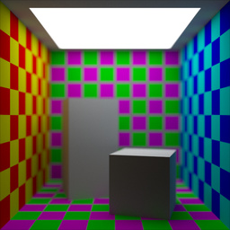
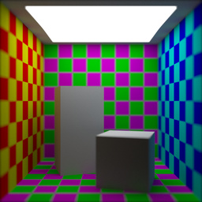
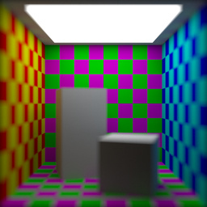
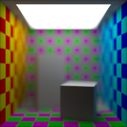
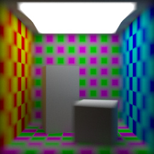
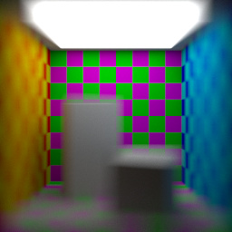
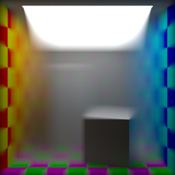
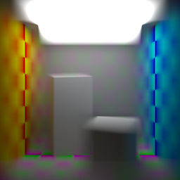
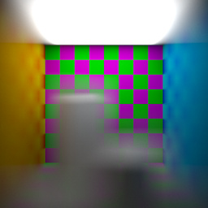

2016-12-21
Real world cameras can only focus on objects that are a set distance away from them. This distance is known as the subject distance. Objects at other distances will appear more or less out of focus, depending on how far away they are from this point. Objects closer to the camera than the subject distance will appear out of focus, as will objects beyond the subject distance. Objects closer to the subject distance (but still not precisely at it) will still be out of focus, but to a much lesser degree.
Real world cameras can also control the degree to which parts of the image are out of focus. Typically this is done by adjusting the focal ratio of the camera lens. This is the ratio between the focal length of the lens (distance from lens to image sensor or film) and the lens’ aperture diameter. The focal ratio is also known as the f-stop or f-number.
Depth of field effects can be simulated in a path tracer by modifying how rays are cast out of the virtual camera. The rays can be perturbed randomly to simulate light passing through the camera aperture at different points.
Depth of field effects have now been implemented in my path tracer, Grayt. It generated the 9 images below. Each image is a rendering of the same scene, but with varying subject distances and focal ratios.
| Focal Ratio | Subject Distance | ||
| Close | Mid | Far | |
| Shallow |  |  |  |
| Medium |  |  |  |
| Deep |  |  |  |